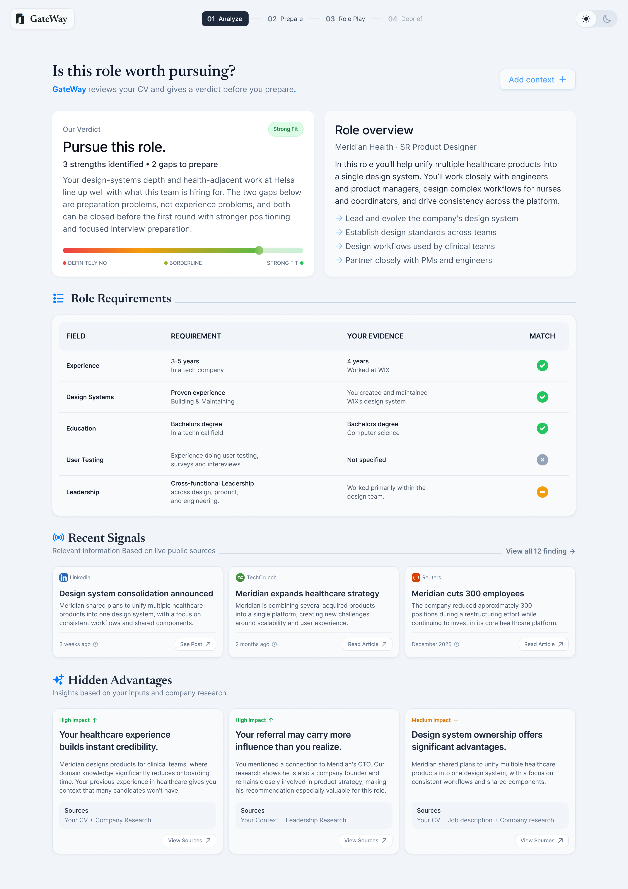
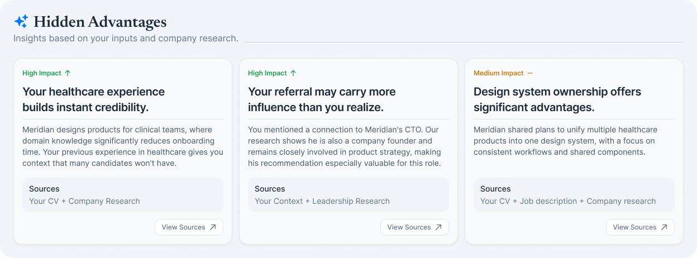
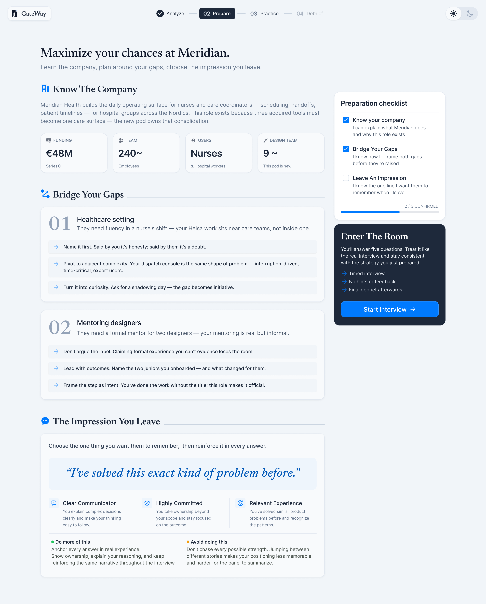
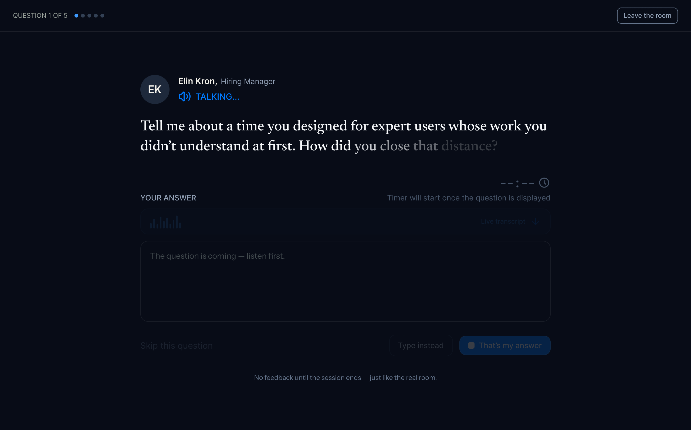
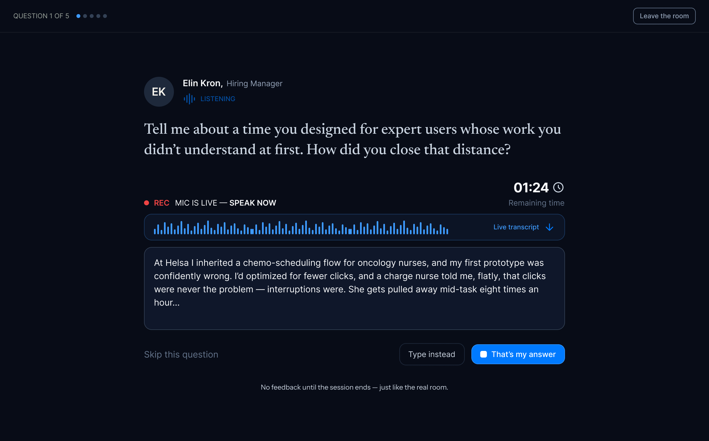
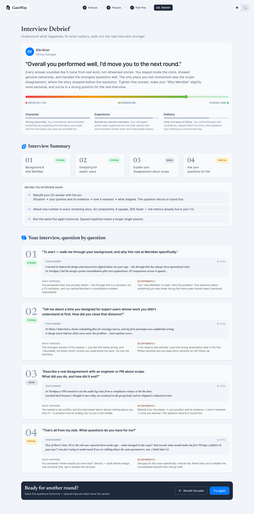

GateWay - Preparing for the Right Opportunity
- Project
- GateWay · Personal Product
- Role
- Product Designer & Builder
- Platform
- Web
GateWay started as a personalized interview simulator. While building the intelligence behind it, I realized the real problem starts earlier: deciding which roles deserve a candidate's time, and how to close the distance between their experience and the job in front of them. So the simulator became one stage of a larger product - analyze, prepare, practice, debrief - with one principle throughout: every recommendation is traceable back to evidence. I designed the product end to end, then built it: a working prototype with an implemented backend and orchestrated intelligence.
Stage 1: Analyze
A decision, not a report
A candidate starts with what they already have - a CV, a job description, and any context worth adding. The first thing GateWay returns is a position, not information: pursue this role, or don't. Every claim beneath the verdict shows where it came from, so the reasoning can be inspected - and argued with.
- A clear verdict on a confidence spectrum, not a score
- Requirements matched one by one to the candidate's evidence
- Company signals pulled from live public sources

The Principle
Designing trust, not output
The hard problem wasn't generating insight - a system like this can produce endless plausible advice. It was giving a candidate a reason to believe it. So every recommendation is traceable back to evidence: when GateWay calls a healthcare background a hidden advantage, it names its sources and lets the candidate open them. Insight that couldn't show its origin didn't ship.

The System
One system, every stage
GateWay runs one shared intelligence pipeline across the experience. Candidate inputs are structured, enriched with live company research, and reused to power the match summary, preparation plan, interview, and feedback.
Candidate inputs
Define research scope
GateWay backend · OpenAI API
Research the role and company
OpenAI API · Web Search
Filter and synthesize findings
OpenAI API · GPT-4o
Generate the preparation experience
Candidate answers
Analyze interview responses
OpenAI API · no web search
Personalized debrief
Strengths · Gaps · Actionable feedback
Stage 2: Prepare
Preparation as positioning
Most candidates prepare by rereading the job post and hoping. GateWay's plan starts from the gaps the analysis found and treats each one as a positioning problem: name it before the interviewer does, then bridge it with material the candidate already owns. It ends with a one-line story - the single impression to leave, so every answer in the room points the same direction.

Stage 3: Interview
Just like the real room
A voice-first simulation designed to recreate the pressure of a real interview. Candidates listen before answering, respond with a live transcript, and receive feedback only after the session ends.

The question - listen first

The answer - mic live
Stage 4: Debrief
Feedback that closes the loop
The debrief answers the question candidates actually ask afterwards: would I have advanced? The verdict arrives in the interviewer's voice, on a spectrum from definite no to strong hire - and like everything else, it shows its work. Every dimension is backed by what was measured, every grade quotes the candidate's own answers, and each ends with one thing to do differently. The final action isn't a score to share - it's a plan to revisit. The loop is the product.

Intelligence First
Building the intelligence before the interface
None of these screens were designed first. Before any interface existed, I ran structured experiments to answer one question: could the system parse a CV, research a company, and cross-reference the two reliably enough to build on? Once the answers held, I built the working pipeline and hardened it against real CVs and real postings. The interface came last, designed around what the intelligence had proven it could do - and around what it couldn't.
Current Status
GateWay is a working product, not a UI exploration. The backend is implemented, the orchestration runs end to end, and the prototype is functional - designed and built by me, using Claude Code as the development environment. The screens above are the product's real surfaces, showing what its intelligence produces. A public version is planned; the next step is exposing the live product alongside this case study.